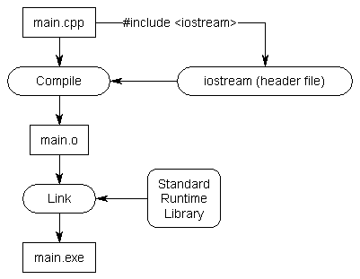
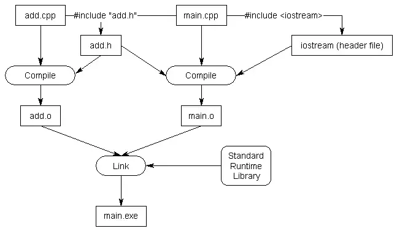

头文件及其用途#
随着程序越来越大（以及越来越多的文件被使用），为每个被定义在其他文件中的函数创建前向声明 会变得非常麻烦。如果能够将所有的前向声明都放在一个文件里，然后在需要使用的时候将其导入，岂不美哉？
C++ 代码文件(扩展名为 .cpp) 并不是 C++项目中唯一常见的文件类型。头文件通常以 .h 扩展名结尾，但是有时候你也会看到 .hpp 扩展名的头文件，甚至有些都没有扩展名。 这类头文件的主要作用就是放置代码的声明。
使用标准库的头文件#
考虑如下程序：
#include <iostream>
int main()
{
std::cout << "Hello, world!";
return 0;
}这个程序使用 std:: cout 将 “Hello, world!” 打印在控制台上。不过，我们的程序并没有定义过 std:: cout 函数呀？编译器如何得知它的定义的呢？
实际上 std:: cout 的声明被定义在 “iostream” 头文件中，当我们使用 #include <iostream> 指令的时候，其实是在告诉预处理器，将该文件的内容（其中就包括 std:: cout 的前向声明）全部拷贝到此处。
考虑一下，如果 iostream 头文件不存在会怎样？那么你每次使用 std:: cout 的时候，都必须手工将所有和 std:: cout 相关的声明都输入或拷贝到文件的开头部分。这样不仅麻烦，还需要使用者知道 std:: cout 实现的细节，这将会是非常非常大的工作量。更糟的是，一旦函数原型发生了改变，我们必须手动更新全部的声明。所以，最简单的方法莫过于直接使用 #include <iostream>！
对于函数和变量来说，需要注意的是，它们的头文件中通常只包含声明，而不包含函数和变量的定义（否则可能会违反 单一定义规则(one-definition-rule)）。std:: cout 被前向定义在 iostream 头文件中并作为 C++标准库的一部分，而标准库则会在程序编译时被自动链接。

编写头文件#
现在，回想一下之前课程中使用过的程序。该程序包含两个文件 add.cpp 和 main.cpp：
int add(int x, int y)
{
return x + y;
}#include <iostream>
int add(int x, int y); // forward declaration using function prototype
int main()
{
std::cout << "The sum of 3 and 4 is " << add(3, 4) << '\n';
return 0;
}（如果你想要为这两个文件重新创建一个项目，不要忘记把 add.cpp 文件加到项目中，这样你才能编译它）。
在这个例子中，我们使用了前向声明以便让编译器在编译 main.cpp 时能够知晓 add 的定义。正如之前介绍的那样，如果为每一个定义在其他文件中的函数都创建前向声明，将会非常麻烦：
其实，只需要编写一个头文件就可以一劳永逸解决上述烦恼。编写头文件比你想象的要简单的多，它只包含两部分：
- 头文件防卫式声明，稍后我们会详细介绍(参考：2.12 - 头文件防卫式声明)。
- 头文件的实际内容，即所有我们希望能够在其他文件中被访问的标识符的前向声明。
将头文件添加到项目中的方法和添加源文件差不多（参考：2.8 - 多文件程序）。如果你使用的是 IDE，可以参考之前课程中提到的步骤，只不过在选择 Source 的时候，要改为选择 Header。如果你使用的是命令行环境，则只需要用编辑器创建一个新的文件即可。
头文件和源文件通常是成对出现的，头文件会为对应的源文件提供前向声明。因为头文件包含的是 add.cpp 中函数的声明，因此头文件命名为 add.h。
完成后的头文件如下：
add.h:
// 1) 这里应该是头文件包含保护，但是这个例子中只有一个头文件，为了简化这里就省略了
// 2) .h 文件的内容，声明都写在这里
int add(int x, int y); // 函数原型——不要忘记分号！为了在main.cpp中使用该头文件，我们需要 #include (这里需要使用引号而非尖括号)。
#include "add.h" // 将 add.h 插入到此位置。注意使用双引号。
#include <iostream>
int main()
{
std::cout << "The sum of 3 and 4 is " << add(3, 4) << '\n';
return 0;
}#include "add.h" // add.h 的内容会被拷贝到这里。注意使用双引号。
int add(int x, int y)
{
return x + y;
}当预处理器处理到 #include "add.h" 的时候，它会把 add.h中的内容都拷贝到这里。因为add.h包含了函数 add 的声明，所以该声明就会被拷贝到了main.cpp中。最终的效果，就和之前直接将声明写在 main.cpp顶部是一样的。
现在，我们的程序就可以被正确的编译和链接了。

源文件需要包含其对应的头文件#
C++ 中的最佳实践之一就是源文件应该包含其对应的头文件（如果存在的话）。在上面的例子中， add.cpp 应该包含 add.h。
这么做可以使得有些问题可以在编译时被发现，而不是留到链接时再发现。例如：
int something(int); // 声明的返回类型是 int#include "something.h"
void something(int) // 错误: 错误的返回类型
{
}因为 something.cpp #includes了 something.h，因此编译器可以在编译时发现 something() 函数的返回值类型不匹配。而如果 something.cpp 没有 #include something.h，那么我们必须要等到链接时，该问题才会被链接器发现，这无疑会浪费时间。其他例子可以参考这个评论 。
错误排查#
如果编译器报告了 add.h 无法被找的错误，请首先确认文件名是否为 add.h。文件名可能会被错误地设置为 add (无后缀) 或 add.h.txt 或 add.hpp，这可能取决于你是如何创建它们的。另外，也要确保该头文件和其他文件位于相同的目录。
如果链接器报告了 add函数未定义的错误，请确保 add.cpp 被添加到了项目中，这样add函数才能够被正确链接。
尖括号 vs 双引号#
你可能会好奇，为什么 iostream 使用的是尖括号，而 add.h就需要使用双引号。这是因为，同名的文件可能会分布在不同的目录中。区分使用尖括号和双引用，可以告诉编译器到哪里寻找头文件。
当使用尖括号的时候，其实是在告诉预处理器对应的头文件并不是我们编写的。编译器只会在 include directories 指定的目录中搜索。include directories是项目、IDE或编译器配置的一部分，默认的路径是由编译器或操作系统提供的。编译器并不会在你的项目目录中搜索对应的头文件。
当使用双引号的时候，其实是在告诉预处理器头文件是我们自己编写的。编译器首先会搜索当前目录，如果找不到所需的头文件，则会在 include directories 中进行查找。
为什么 iostream 没有 .h 后缀?#
另外一个常见的问题是：”为什么 iostream（或者其他标准库头文件）没有.h后缀呢？“。这是因为 iostream.h 和 iostream 是两个不同的头文件。这涉及到一些历史知识。
在 C++ 刚被创建出来的时候，所有的标准运行时库都是以.h结尾的。最初版本的 cout 和 cin 也都被定义在 iostream.h 中。在ANSI委员会对语言进行标准化的时候，它们决定要将标准库中的函数都移到std命名空间中以避免其和用户定义的函数产生命名冲突。不过，现实问题是，如果此时将这些函数都移动到std命名空间中，那么之前写的代码就都不能工作了！
为了解决这个问题，只能使用一组新的头文件，它们具有相同的名字，但没有.h后缀。这些新的头文件中的函数，都在std作用域中。这样，使用#include <iostream.h>的老代码就不需要进行任何修改了，而新编写的代码则需要使用 #include <iostream>。
此外，从 C 语言继承过来的标准库则被添加了一个c作为前缀(例如 stdlib.h 变成了 cstdlib)。这些库中的函数也同样被移动到了std标准库中。
include 其他目录中的头文件#
另外一个常见问题是如何包含其他目录中的头文件。
一种可行（但不好的）的方法是使用相对路径来指定 #include 的内容，例如：
#include "headers/myHeader.h"
#include "../moreHeaders/myOtherHeader.h"这么做程序是可以编译的（假设对应的头文件确实在这个目录下），但是它的缺点也很明显，你必须在代码中描述实际的目录结构。如果目录结构更新了，那代码也就不能工作了。
更好的办法是告诉编译器或者 IDE有些头文件存放在其他位置，此时当它们无法在当前目录下被找到时，编译器会到指定的目录中查找。通常可以通过在 IDE 中设置项目的 include path 或 search directory 来实现。
这么做的好处是，如果你改变了目录结构，那么只需要在设置里面修改路径即可，而不必对代码中每一处使用该头文件的地方进行修改。
头文件中可以包含其他头文件#
头文件需要依赖其他头文件中的定义或声明也是很常见的。因此，头文件可以使用#include来包含其他头文件。
当你的代码 #includes 第一个头文件时，你其实也包含了该头文件中包含的其他头文件（以及这所有头文件中包含的头文件，以此类推）。这些额外的头文件有时候称为间接包含(transitive includes)，因为它们是被隐式包含进来的，我们明没有指明哪些需要被包含。
这些头文件中的内容在你的代码中是可用的。不过你并不应该依赖它们，毕竟它们是被间接包含进来的。这些头文件可能会变化，也可能在不同的系统中存在差异，这时候你的代码可能只能在某平台下才能编译，或者可能在将来无法编译。避免上述问题的方法也很简单，请明确包含你所需要的全部头文件。
不幸的是，我们很难去甄别究竟哪些代码正在依赖那些被间接引入的头文件。
头文件 #include 的顺序#
如果你的头文件内容没问题，并且也 #include 了它们所依赖的其他头文件，那么头文件包含的顺序其实并不重要。
不过，我们可以考虑如下场景：头文件 A 需要头文件 B中的声明，但是却忘记包含 B 了。这种情况下，如果我们在源文件中，先包含 B 再包含A，那么程序是可以编译的，因为编译器会首先编译到B中的声明，然后才会编译到A中对B有依赖的那些代码。
反之，如果我们先包含头文件 A，再包含头文件 B，那么编译器就会报错了，因为它不能在编译 A 时找到其所依赖的 B 中的声明。其实这正是我们希望的结果，因为它把问题暴露了出来，我们便可以对其进行修复。
这样，任何一个你定义的头文件如果没有#include 其所需的第三方库或标准库，那么很可能会导致编译器报错，这样我们就可以进行修复了。
头文件最佳实践#
关于如何使用和创建头文件，我们有如下建议：
- 始终使用头文件重复包含保护 ；
- 不要在头文件中定义变量和函数 (全局常量是个例外——稍后介绍）；
- 头文件和其对应的源文件应该具有相同的文件名（例如，grades.h 和 grades.cpp，注意扩展名是不同的）；
- 每个头文件都应该有其特定的用途并且尽可能独立。例如，与A相关的声明应该放在 A.h 中，与B相关的声明应该放在 B.h 中。这样如果以后仅仅需要使用A相关的功能，则无需包含
B.h，也就不会涉及到任何与B相关的函数声明； - 对于哪些函数应该包含哪些头文件要做到心中有数；
- 你编写的任何头文件都应该能够独立编译（它应当
#include它所需的全部依赖）； - 只
#include必要的头文件（不要把能包含的全部包含进来）； - 不要
#include.cpp 文件。